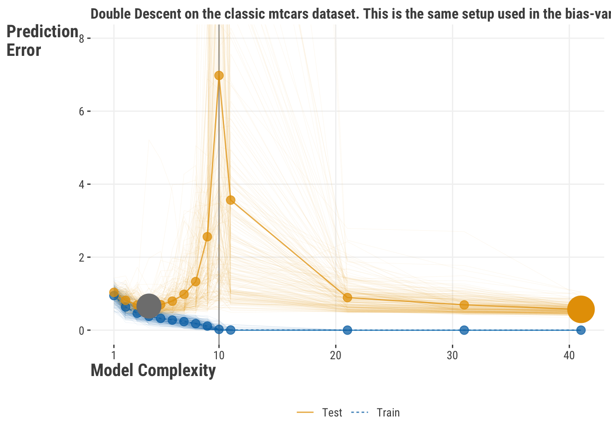
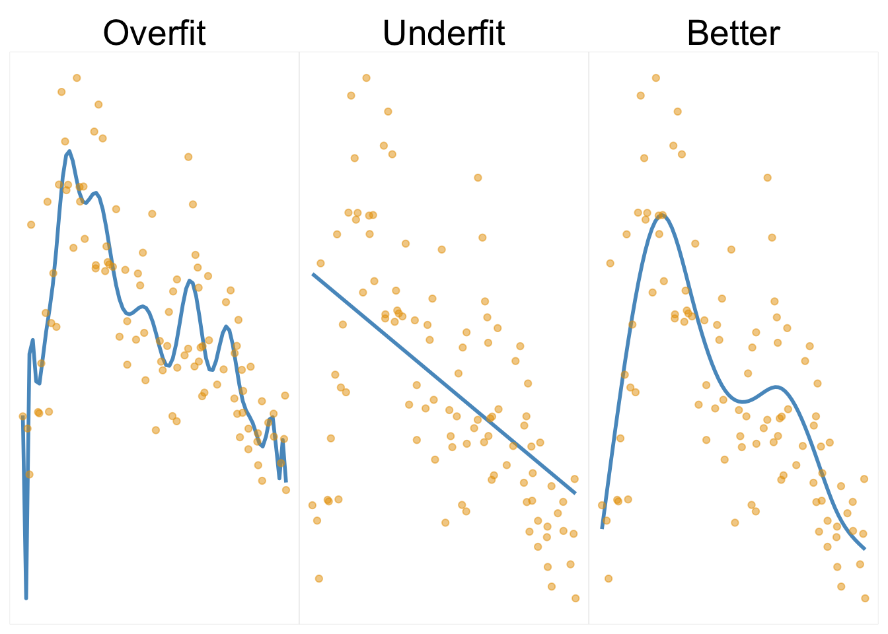

| Objective Function | Description |
|---|---|
| Regression | |
| Mean Squared Error (MSE) | Calculates the average of the squared differences between the predicted and actual values. |
| Mean Absolute Error (MAE) | Calculates the average of the absolute differences between the predicted and actual values. |
| Huber Loss | Less sensitive to outliers than MSE. |
| Log Likelihood | Used for models where the response variable follows a known distribution, and we want to maximize the likelihood of observing the data given the model parameters. |
| Classification | |
| Binary Cross-Entropy / Log Likelihood (Loss) | Used for binary classification problems. Calculates the negative log-likelihood of the class labels given the predicted probabilities. |
| Categorical Cross-Entropy | Used for multi-class classification problems. Calculates the negative log-likelihood of the class labels given the predicted probabilities. |
6 Core Concepts in ML
Machine learning is used everywhere, and allows us to do things that would have been impossible just a couple decades ago. It is used in everything from self-driving cars, to medical diagnosis, to predicting the next word in your text message. The ubiquity of it is such that it, and related adventures like artificial intelligence, are used as buzzwords, and it is not always clear what it meant by the one speaking them. In this chapter we hope you’ll come away with a better understanding of what machine learning is, and how it can be used in your own work. Because however you define it, it sure can be fun!
At its core, machine learning is a branch of data analysis with a primary focus on predictive performance. Honestly, that’s pretty much it from a practical standpoint. It is not a subset of particular types of models, it does not preclude using statistical models, it doesn’t mean that a program spontaneously learns without human involvement1, it doesn’t necessarily have anything to do with ‘machines’ outside of laptop, and it doesn’t even mean that the model is particularly complex. Machine learning, at its core, is a set of tools and a modeling approach that attempts to maximize and generalize performance, and compare models based on that performance2.
This is a different focus than statistical modeling approaches that put much more emphasis on interpreting coefficients and uncertainty. But it is not an exclusive one. Some implementations of machine learning include models that have their basis in traditional statistics, while others are often sufficiently complex that they are scarcely interpretable without a lot of effort, or are used in contexts where interpretation simply isn’t important. However, even after you conduct your modeling via machine learning, you may still fall back on statistical analysis for further exploration of the results. For example, you may want to know the uncertainty of your performance metric, or if the model is significantly better than another model. In any event, here we will also discuss some of the key ideas in machine learning, such as model assessment, loss functions, and cross-validation. Later we’ll demonstrate common models used, but if you want to dive in, you can head there now!
6.1 Key ideas
- Machine learning is not a set of modeling techniques, but rather a modeling focus on predictive performance, and a set of tools and methods to achieve that.
- Models used in machine learning are typically more complex and difficult to interpret than those used in standard statistical models, but any model, including classical statistical ones, can be used with ML.
- There are many performance metrics used in machine learning, and care should be taken to choose the appropriate one for your situation.
- Objective functions likewise should be chosen for the situation, and are often different from the performance metric.
- Multiple performance metrics are able to be used for any given model assessment scenario.
- Regularization is a general approach to penalize complexity in a model, and is typically used to prevent overfitting in order to improve generalization.
- Cross-validation is a method that allows us to select parameters and hyperparameters for our models, and to compare models to one another by assessing a model’s performance on data that was not used to fit the model.
6.1.1 Why this matters
Machine learning applications help define the modern world and how we interact with it. There are few aspects of modern society that have not been touched by it in some way. By understanding the basic ideas behind machine learning, you will be able to understand the models and techniques that are used in these applications, and be able to apply them to your own work. You’ll also be able to understand the limitations of these models.
6.1.2 Good to know
To dive into applying machine learning models, you really only need a decent grasp of linear models as applied to regression and classification problems (Chapter 1, Chapter 4). It would also be good to have an idea behind how they are estimated, as the same basic logic serves as a starting point here (Chapter 3).
6.2 Objective Functions
We’ve implemented a variety of objective functions in other chapters, such as mean squared error for numeric targets and log loss for binary targets. As we have also noted elsewhere, the objective function is not necessarily the same as the performance metric we ultimately use to select a model. For example, we may use log loss as the objective function, but then use accuracy as the performance metric. In that setting, the log loss provides a ‘smooth’ objective function to search the parameter space over, while accuracy is a straightforward and more interpretable metric for stakeholders. In this case, the objective function is used to optimize the model, while the performance metric is used to evaluate the model. In some cases, the objective function and performance metric are the same (e.g. (R)MSE), and even if not, they might have selected the same ‘best’ model, but this is not always the case.
For specific types of tasks, such as predicting ranks, you might use something else, but the above will apply in some of the most common settings. Even when dealing with different types of outcomes, such as counts, proportions, etc., one can typically use a likelihood objective.
6.3 Performance Metrics
There are many performance metrics used in machine learning, and care should be taken to choose the appropriate one for your situation. Typically we have a standard set we might use for the type of predictive problem. For example, for numeric targets, we typically are interested in (R)MSE and MAE, but given a particular scenario we might want to switch to something else. For example, if we are predicting a count type of target, we might use Poisson deviance, which is akin to a Poisson GLM in statistical modeling.
Most classification-based metrics are based on the confusion matrix, which is a table of the predicted classes versus the observed classes. Here is an example.
| Observed Negative | Observed Positive | |
|---|---|---|
| Predicted Negative | 62 | 10 |
| Predicted Positive | 10 | 18 |
The diagonal of the confusion matrix is the number of correct predictions, and the off-diagonal is the number of incorrect predictions. In this particular example we have an accuracy of 80 correct out of 100 total, or 80%. However, there are many metrics we can calculate from this simple confusion matrix, and many of these can also be extended to the multiclass setting. For example, we can calculate the accuracy in general as well as for each class. For an overview of common metrics, refer to Table 2.1.
As an example, and as a reason to get our first taste of machine learning, let’s get some additional metrics for our movie review model. Depending on the tool used, getting one type of metric should be as straightforward as most others if we’re using common metrics. As we start our journey into machine learning, we’ll show Python code first, as it’s the dominant tool.
In Python, we can use the sklearn.metrics module to get a variety of metrics for both regression and classification problems.
from sklearn.metrics import mean_squared_error, mean_absolute_error, r2_score
from sklearn.metrics import accuracy_score, precision_score, recall_score, f1_score
from sklearn.metrics import roc_auc_score, roc_curve, auc, confusion_matrix
from sklearn.linear_model import LinearRegression, LogisticRegression
import pandas as pd
df_movie_reviews = pd.read_csv("data/movie_reviews_processed.csv")
X = df_movie_reviews[
[
'word_count',
'age',
'review_year',
'release_year',
'length_minutes',
'children_in_home',
'total_reviews',
]
]
y = df_movie_reviews['rating']
y_class = df_movie_reviews['rating_good']
model_lin_reg = LinearRegression()
model_lin_reg.fit(X, y)LinearRegression()In a Jupyter environment, please rerun this cell to show the HTML representation or trust the notebook.
On GitHub, the HTML representation is unable to render, please try loading this page with nbviewer.org.
LinearRegression()
# note that sklearn uses regularization by default for logistic regression
model_log_reg = LogisticRegression()
model_log_reg.fit(X, y_class)LogisticRegression()In a Jupyter environment, please rerun this cell to show the HTML representation or trust the notebook.
On GitHub, the HTML representation is unable to render, please try loading this page with nbviewer.org.
LogisticRegression()
y_pred_linreg = model_lin_reg.predict(X)
y_pred_logreg = model_log_reg.predict(X)
# regression metrics
rmse = mean_squared_error(y, y_pred_linreg, squared=False)
mae = mean_absolute_error(y, y_pred_linreg)
r2 = r2_score(y, y_pred_linreg)
# classification metrics
accuracy = accuracy_score(y_class, y_pred_logreg)
precision = precision_score(y_class, y_pred_logreg)
recall = recall_score(y_class, y_pred_logreg)In R, we can use the yardstick package, which has a consistent interface for a variety of metrics.
library(yardstick)
# convert rating_good to factor for yardstick input
df_movie_reviews = read_csv("data/movie_reviews_processed.csv") |>
mutate(rating_good = factor(rating_good, levels = c(0, 1), labels = c("bad", "good")))
model_lin_reg = lm(
rating ~
word_count
+ age
+ review_year
+ release_year
+ length_minutes
+ children_in_home
+ total_reviews,
data = df_movie_reviews
)
model_log_reg = glm(
rating_good ~
word_count
+ age
+ review_year
+ release_year
+ length_minutes
+ children_in_home
+ total_reviews,
data = df_movie_reviews,
family = binomial(link = "logit")
)
y_pred_linreg = predict(model_lin_reg)
y_pred_logreg = predict(model_log_reg, type = "response")
y_pred_logreg = factor(ifelse(y_pred_logreg > .5, "good", "bad"))
# regression metrics
rmse = rmse_vec(df_movie_reviews$rating, y_pred_linreg)
mae = mae_vec(df_movie_reviews$rating, y_pred_linreg)
r2 = rsq_vec(df_movie_reviews$rating, y_pred_linreg)
# classification metrics
accuracy = accuracy_vec(df_movie_reviews$rating_good, y_pred_logreg)
precision = precision_vec(df_movie_reviews$rating_good, y_pred_logreg)
recall = recall_vec(df_movie_reviews$rating_good, y_pred_logreg)We put them all together in the following table. Now we know how to get them, and it was easy! But as we’ll see later, there is a lot more to think about before we use these for model assesment.
| Metric | Value |
|---|---|
| Linear Regression | |
| RMSE | 0.52 |
| MAE | 0.41 |
| R-squared | 0.32 |
| Logistic Regression | |
| Accuracy | 0.71 |
| Precision | 0.69 |
| Recall | 0.60 |
6.4 Generalization
One of the key differences separating ML from traditional statistical modeling approaches is the assessment of performance on unseen or future data, a concept commonly referred to as generalization. The basic idea is that we want to build a model that will perform well on new data, and not just the data we used to fit the model, because ultimately data is ever evolving, and we don’t want to be beholden to a particular set of data we just happened to have at a particular time.
But how do we do this? For starters, we can simply split our data into two sets, a training set and a test set, often called a holdout set. The test set is typically a smaller subset, say 25%, but this amount is arbitrary, and will reflect the data situation. We fit the model on the training set, and then use the model to make predictions on, or score, the test set. This general approach is also known as the holdout method. Consider a simple linear regression. We can fit the linear regression model on the training set, which provides us coefficients, etc. We can then use that model result to predict on the test set, and then compare the predictions to the actual values in the test set. Here we demonstrate this with our simple linear model from before.
from sklearn.model_selection import train_test_split
from sklearn.linear_model import LinearRegression
from sklearn.metrics import mean_squared_error
import pandas as pd
X = df_movie_reviews[
[
'word_count',
'age',
'review_year',
'release_year',
'length_minutes',
'children_in_home',
'total_reviews',
]
]
y = df_movie_reviews['rating']
X_train, X_test, y_train, y_test = train_test_split(
X, y, test_size=0.25, random_state=123
)
model = LinearRegression()
model.fit(X_train, y_train)LinearRegression()In a Jupyter environment, please rerun this cell to show the HTML representation or trust the notebook.
On GitHub, the HTML representation is unable to render, please try loading this page with nbviewer.org.
LinearRegression()
# get predictions
y_pred = model.predict(X_test)
# get RMSE on test
mean_squared_error(y_test, y_pred, squared=False)RMSE on test: 0.53# create a train and test set
library(rsample)
set.seed(123)
split = initial_split(df_movie_reviews, prop = .75)
df_train = training(split)
df_test = testing(split)
model_reviews_extra = lm(
rating ~
word_count
+ age
+ review_year
+ release_year
+ length_minutes
+ children_in_home
+ total_reviews,
data = df_train
)
# get predictions
test_preds = predict(model_reviews_extra, newdata = df_test)
# get RMSE on test
yardstick::rmse_vec(df_test$rating, test_preds)RMSE on test: 0.54So there you have it, we have a model that we can use to predict on new data without too much trouble. As we’ll soon see though, there are limitations to doing things this simply. But conceptually this is an important idea, and one we will continue to return to in our discussion of machine learning.
6.4.1 Using Metrics for Model Evaluation and Selection
As we’ve seen, there are many performance metrics to choose from to assess model performance, and the choice of metric depends on the type of problem. For example, for a problem for numeric targets, we might use RMSE, while for a classification problem, we might use accuracy. As discussed, it turns out that assessing the metric on the data we used to fit the model does not give us the best assessment of that metric. This is because the model will do better on the data it was trained on than on new data it wasn’t trained on, and we can generally always improve that metric in training by making the model more complex. However, in many modeling situations, this complexity comes at the expense of generalization, and the model will not perform as well on new data, something we’ll discuss in more detail shortly. So what we really want to ultimately say about our model will regard performance on the test set with our chosen metric, and not the data we used to fit the model. At that point, we can also compare multiple models to one another given their performance on the test set, and select the one that performs best.
You should take a moment to compare our result with the holdout method to the intial model we used to get some metrics, where the model was fit on the entire dataset. Metrics are almost always better on the training set, and that’s because the model was fit on the entire dataset, and so it was able to capture more of the variability in the data. But that’s not what we’re interested in. We want to know how well the model will do on new data, and so we use the test set to get a sense of that.
6.4.2 Understanding Test Error and Generalization
This part gets into the weeds a bit. If you are not so inclined, skip to the summary of this section.
In the following discussion, you can think of a standard linear model scenario just as we have been using, e.g. with squared-error loss function, and a data set where we split some of the observations in a random fashion into a training set, for initial model fitting, and a test set, which will be kept separate and independent, and used to measure generalization performance. We note training error as the average loss over all the training sets we could create in this process, and test error as the average prediction error obtained when a model fitted on the training data is used to make predictions on the test data. So, in addition to the previously noted goal of finding the ‘best’ model, model selection, we are interested further in estimating the prediction error with new data, model performance.
6.4.2.1 Generalization in the Classical Regime
So consider a modeling situation where we have the usual situation of splitting data into training and test sets. We run the model on the training set, but we are more interested in generalization error, or how well it predicts on the test set. We can think of the test error as the average error over many such splits of the data into training and test sets. Given this scenario, let’s look at the following visualization inspired by Hastie, Tibshirani, and Friedman (2017).

Prediction error on the test set, shown in red, is a function of several components, and the terms bias and variance generally refer to two of those components. One thing to note is that even if we had the ‘true’ model given the features specified correctly, there would still be prediction error due to the random data generating process.
The main idea here is that as the model complexity increases, we potentially capture more of the data variability. The so-called bias, which is the difference in our average prediction and the true model prediction, decreases, but this only continues for training error, shown in blue, where eventually our model can possibly fit the training data perfectly! For test error though, as the model complexity increases, the bias decreases, but the variance, which is the variability in prediction with changes in data, eventually increases. This is because we get too close to the training data and do poorly when we try to generalize beyond it. This is traditionally known as the bias-variance tradeoff - we can reduce one source of error in the test set at the expense of the other, but not both at the same time indefinitely. In other words, we can reduce bias by increasing model complexity, but this will eventually increase variance in our test predictions. We can reduce variance by reducing model complexity, but this will increase bias. The goal is to find the sweet spot where we have a model that is complex enough to capture the underlying process, but not so complex that it overfits to the training data. Recall that we’re not as interested in training error except to get a sense of how well the model fits the data- ideally it at least does well on training!
6.4.2.2 Generalization in Deep Learning
It turns out that with lots of data and very complex models, or maybe just in most settings, our classical understanding doesn’t hold up like we’d think. In fact, we can get a model that fits the training data perfectly, and yet ultimately still generalizes well to new data! This phenomenon is encapsulated in the notion of double descent. The idea is that, with overly complex models such as those employed with deep learning, we get to the point of interpolating the data exactly (Figure 6.3). But as we continue to increase the complexity of the model, we actually start to generalize better again, and visually this displays as a double descent in terms of test error. We see an initial decrease in test error as the model gets better in general. After a while, it begins to rise as seen in the classical regime (Figure 6.1), to where we hit a peak at the point where we have as many parameters as data points. Beyond that however, as we go even more complex with our model, we can possibly see a decrease in test error again. Crazy!
We demonstrate this on the classic mtcars dataset3, which has only 32 observations! We repeatedly train a model to predict miles per gallon on only 10 of those observations, and assess test error on the rest. The model we use is a form of ridge regression, but implemented such that we can use splines for the car’s weight, horsepower, and displacement4. We fit increasingly complex models, and plot the test error and training error as a function of model complexity. We see that the test error dips as we get a better model, but eventually rises as expected. It eventually hits a peak, but then starts to decrease again! This is the double descent phenomenon with one of the simplest datasets around. Cool!

6.4.2.3 Generalization Summary
The take home point is this: our primary concern is generalization error. We can reduce this error by increasing model complexity, but this may eventually cause test error to increase. However, with enough data and model complexity, we can get to the point where we can fit the training data perfectly, and yet still generalize well to new data. Unless you are doing deep learning, you can maybe assume the classical regime holds, but when doing deep learning, you can worry less about the model’s complexity. In any event, we still want to employ tools to help reduce generalization error, and we prefer smaller and simpler models that can do as well as more complex ones, even if those models are still billions of parameters!
6.5 Regularization
As we’ve seen, a key aspect of the machine learning approach is to generalize to new data. One way to improve generalization is through the use of regularization, which is a general approach to penalize complexity in a model, and is typically used to prevent overfitting. Overfitting occurs when a model fits the training data very well, but does not generalize well to new data, and this is often due to the model being too complex for the data setting, and is fitting to noise in the training data that isn’t present in other data. Note that the converse can also happen, and is often the case with simpler models, where the model does not fit the training data well, and so does not generalize well to new data either, and this is known as underfitting5.
We demonstrate this in the following visualization. The first plot shows results from a model that is notably complex, and in doing so presents a very wiggly result. This is an example of overfitting, and is often seen in models that are too complex for the underlying data. The second plot shows a straight line fit as we’d get from linear regression, which is an example of underfitting. The third plot shows a model that is a better fit to the data, and is an example of a model that is complex enough to capture the nonlinear aspect of the data, but not so complex that it is trying to capitalize on noise in the data.

When we examine generalization performance6, we see that the overfit model does best on training data, but relatively very poorly on test- nearly a 20% increase in the RMSE value. The underfit model doesn’t change as much in performance because it was poor to begin with on training. Our ‘better’ model wasn’t best on training, but was best on the test set.
| Model | RMSE | % change |
|---|---|---|
| Train | ||
| Better | 2.18 | |
| Over | 1.97 | |
| Under | 3.05 | |
| Test | ||
| Better | 2.19 | 0.6 |
| Over | 2.34 | 19.1 |
| Under | 3.24 | 6.1 |
We have already seen one example of regularization in the ridge regression model (ADD CHAPTER LINK), where we add a penalty term to the objective function. This penalty term is a function of the coefficients, and is based on the sum of the squared values of the coefficients. It is also known as an L2 penalty, and is a very common type of regularization. Another common approach for linear models is the L1 penalty, which is the sum of the absolute values of the coefficients. This is used in the lasso model. There are other types of regularization as well, such as the elastic net, which is a combination of the L1 and L2 penalties. The relative size of the two penalties is controlled by a mixing parameter, and the optimal value of that parameter is determined by cross-validation.
It turns out that regularization is used in many modeling scenarios. Here is a quick rundown of some examples.
GAMs also use penalized regression for estimation, where the coefficients used in the basis functions are penalized (typically with L2). This keeps the ‘wiggly’ part of the GAM from getting too wiggly, as in the overfit model above (Figure 6.3), tending toward a linear effect.
Similarly, the variance estimate of a random effect in mixed models, e.g. for the intercept or slope, is inversely related to an L2 penalty on the fixed effects estimates for that group effect. The more penalization applied, the less random effect variance, and the more the random effect is shrunk toward the overall mean7.
Still another form of regularization occurs in the form of priors in Bayesian models. For example, the variance on the prior for regression coefficients could be very large, which amounts to a result where there is little influence of the prior on the posterior, or it could be very small, which amounts to a result where the prior has a lot of influence on the posterior, shrinking it toward the prior mean, which is typically zero. In fact, ridge regression is a frequentist form of standard Bayesian linear regression with a normal distribution prior for the coefficients, and the L2 penalty is related to the variance of that prior.
As a final example of regularization, dropout is a technique used in deep learning to prevent overfitting. It works by randomly dropping out some of the nodes in intervening/hidden layers in the network during training. This tends to force the network to learn more robust features, allowing for better generalization.
In short, regularization comes in many forms across the modeling landscape, and is a key aspect of machine learning and traditional statistical modeling alike. In general, we can add the same sort of penalty to any number of models, such as logistic regression, neural networks, recommender systems etc. The primary goal again is to hopefully increase our ability to generalize the selected model to new data.
6.6 Cross-validation
So we’ve talked a lot about generalization to unseen data, so now let’s think about some ways to go about a general process of selecting parameters for a model and assessing performance and generalization.
As noted previously, the simplest approach is to split the data into training and test sets, fit the model on the training set, and then assess performance on the test set. This is all well and good, but the test error has uncertainty, and would be slightly different with any training-test split we came up with. We’d also like to get a better assessment when searching the parameter space, because there are oftentimes parameters for which we have no way of guessing the value beforehand. In this case, we need to figure out the best parameters before assessing a final model’s performance. One way to do this is to split the data into multiple test sets, which we now call validation sets, because we still want a test set to be held out that is in no way used during the training process. We fit the model on the training set, and then assess performance on the validation set(s). We then repeat this process for many different splits of the data into training and validation sets, and average the results. This is known as K-fold cross-validation.
Here is a visualization of 3-fold cross validation. We split the data such that 2/3 of it will be used for training, and 1/3 for validation. We then do this for a total of 3 times, such that the validation set is on a different part of the data each time, and all observations are used for both training and validation at some point. We then average the results of any metric across the validation sets. Note that in each case here, there is no overlap of data between the training and validation sets.

The idea is that we are trying to get a better estimate of the test error by averaging over many different test sets. The number of folds, or splits, is denoted by \(K\). The value of \(K\) can be any number, but typically is 10 or less. The larger the value of \(K\), the more accurate the estimate of the test error, but the more computationally expensive it is, and in application, you generally don’t need much to get a good estimate of the mean error. However, with smaller datasets, one can even employ a leave-one-out approach, where \(K\) is equal to the number of observations in the data.
So cross-validation provides a better measure of the test error. If we are interested when we look at models with different parameters we’re trying to figure out, we can pit their respective average errors against one another, and select the model with the lowest average error, a process known generally as model selection. This works for choosing a model within a potential set of hyperparameter settings, for example, with different penalty parameters for regularized regression, but can also aid in choosing a model from a set of different model types, for example, standard linear model approach vs. boosting.
Now how might we go about this for modeling purposes? Very easily with modern packages. In the following we demonstrate this with a logistic regression model.
# import necessary libraries
from pandas import read_csv
from sklearn.linear_model import LogisticRegressionCV
from sklearn.metrics import accuracy_score
df_movies = read_csv("data/movie_reviews_processed.csv")
X = df_movies.filter(regex="_sc$")
y = df_movies["rating_good"]
# Cs is the (inverse) penalty parameter;
clf = LogisticRegressionCV(penalty='l2', Cs=[1], cv=5, max_iter=1000)
clf.fit(X, y)LogisticRegressionCV(Cs=[1], cv=5, max_iter=1000)In a Jupyter environment, please rerun this cell to show the HTML representation or trust the notebook.
On GitHub, the HTML representation is unable to render, please try loading this page with nbviewer.org.
LogisticRegressionCV(Cs=[1], cv=5, max_iter=1000)
# clf.scores_ # show the accuracy score for each fold
# print the average accuracy score
clf.scores_[1].mean()0.671For R, we prefer mlr3 for our machine learning demonstrations, as we feel it is more like sklearn in spirit, as well as offering computational advantages for when you want to actually do ML with R. The tidymodels ecosystem is also a good option.
# Load necessary libraries
library(mlr3)
library(mlr3learners)
df_movies = read_csv(
"data/movie_reviews_processed.csv",
col_select = matches('_sc|rating_good')
)
df_movies = df_movies %>%
mutate(rating_good = as.factor(rating_good))
# Define task
task_lr_ridge = TaskClassif$new("movie_reviews", df_movies, target = "rating_good")
# Define learner (alpha = 0 is ridge regression)
learner_lr_ridge = lrn("classif.cv_glmnet", alpha = 0, predict_type = "response")
learner_lr_ridge$param_set$values$alpha = 1 # set the penalty parameter to some value
# Define resampling strategy
result_lr_ridge = resample(
task = task_lr_ridge,
learner = learner_lr_ridge,
resampling = rsmp("cv", folds = 5)
)INFO [18:55:16.368] [mlr3] Applying learner 'classif.cv_glmnet' on task 'movie_reviews' (iter 1/5)
INFO [18:55:16.478] [mlr3] Applying learner 'classif.cv_glmnet' on task 'movie_reviews' (iter 2/5)
INFO [18:55:16.522] [mlr3] Applying learner 'classif.cv_glmnet' on task 'movie_reviews' (iter 3/5)
INFO [18:55:16.563] [mlr3] Applying learner 'classif.cv_glmnet' on task 'movie_reviews' (iter 4/5)
INFO [18:55:16.607] [mlr3] Applying learner 'classif.cv_glmnet' on task 'movie_reviews' (iter 5/5)# result_lr_ridge$score(msr('classif.acc')) # show the accuracy score for each fold
# print the average accuracy score
result_lr_ridge$aggregate(msr('classif.acc'))classif.acc
0.658 In each case above, we end up with five separate accuracy values, one for each fold. Our final assessment of the model’s accuracy is the average of these five values. This is a better estimate of the model’s accuracy than if we had just used a single test set, and in the end it is based on the entire data.
6.6.1 Methods of Cross-validation
There are different approaches we can take for cross-validation that we may need for different data scenarios. Here are some of the more common ones.
- Shuffled: Shuffling prior to splitting can help avoid data ordering having undue effects.
- Grouped/stratified: In cases where we want to account for the grouping of the data, e.g. for data with a hierarchical structure. We may want groups to appear in training or test, but not both, as with grouped k-fold. Or we may want to ensure group proportions across training and test sets, as with stratified k-fold.
- Time-based: e.g. for time series data, where we only want to assess error on future values
- Combinations: e.g. grouped and time-based
Here are images from the scikit-learn library documentation depicting some different cross-validation approaches.


In general, the form we employ will be based on our data needs.
6.7 Tuning
One problem with the previous ridge logistic model we just used is that we set the penalty parameter to a fixed value. We can do better by searching over a range of values instead, and picking a ‘best’ one. This is generally known as hyperparameter tuning, or simply tuning. We can do this with cross-validation as well where we will use k-fold cross-validation to assess the error for each value of the penalty parameter values. We then select the value of the penalty parameter that gives the lowest average error. This is a form of model selection.
Another potential point of concern is that we are using the same data to both select the model and assess its performance. This is a form of a more general phenomenon of data leakage, and may result in an overly optimistic assessment of performance. One solution is to do as we’ve discussed before, which is to split the data into three parts: training, validation, and test. We use the training set(s) to fit the model, the validation set(s) to select the model, and then finally use the test set to assess the model’s performance. The validation approach is used to select the model, and the test set is used to assess the model’s performance. The following visualizations from the scikit-learn documentation illustrates the process.


6.7.1 A Tuning Example
While this may start to sound complicated, it doesn’t have to be, as tools are available to make our generalization journey a lot easier. In the following we demonstrate this with a ridge based logistic regression model. The approach we use is called a grid search, where we explicitly step through potential values of the penalty parameter. While we only look at one parameter here, for a given modeling approach we could construct a ‘grid’ of sets of parameter values8 to search over as well.
We use the LogisticRegression function in sklearn to perform k-fold cross-validation to select the best penalty parameter. We then apply the best model to the test set and calculate accuracy. We do the same thing in R with the mlr3tuning package. We use the AutoTuner function to perform k-fold cross-validation to select the best penalty parameter. In both settings we are interested in the average accuracy score across the folds, and ultimately the test set9.
# import necessary libraries
from sklearn.model_selection import GridSearchCV, train_test_split
from sklearn.linear_model import LogisticRegression
from sklearn.metrics import accuracy_score
X = df_movie_reviews.filter(regex="_sc$")
y = df_movie_reviews["rating_good"]
# split the dataset into training and test sets
X_train, X_test, y_train, y_test = train_test_split(
X,
y,
test_size=0.25,
random_state=42
)
# define the parameter values for GridSearchCV
param_grid = {
'C': [0.1, 1, 2, 5, 10, 20],
}
# perform k-fold cross-validation to select the best penalty parameter
# Note that LogisticRegression by default is ridge regression for scikit-learn
grid_search = GridSearchCV(
LogisticRegression(), param_grid=param_grid, cv=5, scoring='accuracy'
)
grid_search.fit(X_train, y_train)GridSearchCV(cv=5, estimator=LogisticRegression(),
param_grid={'C': [0.1, 1, 2, 5, 10, 20]}, scoring='accuracy')In a Jupyter environment, please rerun this cell to show the HTML representation or trust the notebook. On GitHub, the HTML representation is unable to render, please try loading this page with nbviewer.org.
GridSearchCV(cv=5, estimator=LogisticRegression(),
param_grid={'C': [0.1, 1, 2, 5, 10, 20]}, scoring='accuracy')LogisticRegression()
LogisticRegression()
best_param = grid_search.best_params_['C']
# apply the best model to the test set and calculate accuracy
best_model = grid_search.best_estimator_
acc_train = best_model.score(X_train, y_train)
acc_test = best_model.score(X_test, y_test)Best C: 2
Accuracy on train set: 0.661
Accuracy on test set: 0.692# Load necessary libraries
library(mlr3verse)
library(paradox) # for tuning
library(rsample) # for splitting data
df_movie_reviews_ = df_movie_reviews %>%
mutate(rating_good = as.factor(rating_good)) |>
select(matches('sc|rating_good'))
# split the dataset into training and test sets
splits = initial_split(df_movie_reviews_, prop = 0.75)
df_train = training(splits)
df_test = testing(splits)
# Define task
task = TaskClassif$new("movie_reviews", df_train, target = "rating_good")
# Define learner
learner = lrn("classif.glmnet", alpha = 0, predict_type = "response")
# Define resampling strategy
resampling = rsmp("cv", folds = 5)
# Define measure
measure = msr("classif.acc")
# Define parameter space
param_set = ParamSet$new(
list(
ParamDbl$new("lambda", lower = 1e-3, upper = 1)
)
)
# Define tuner
tuner = AutoTuner$new(
learner = learner,
resampling = resampling,
measure = measure,
search_space = param_set,
tuner = tnr("grid_search", resolution = 10),
terminator = trm("evals", n_evals = 10)
)
# Tune hyperparameters
tuner$train(task)
# Get best hyperparameters
best_param = tuner$model$learner$param_set$values
# Use the best model to predict and get metrics
acc_train = tuner$predict(task)$score(msr("classif.acc"))
acc_test = tuner$predict_newdata(df_test)$score(msr("classif.acc"))Best lambda: 0.223
Accuracy on train set: 0.681333333333333
Accuracy on test set: 0.684So there you have it. We searched a parameter space, chose the best set of parameters via k-fold cross validation, and got an assessment of generalization error in just a couple lines of code. Neat!
6.7.1.1 Search Spaces
In the previous example, we used a grid search to search over a range of values for the penalty parameter. This is a very simple approach, but it can be computationally expensive. We can do better by using a more sophisticated approach to search over the parameter space. For example, we can use a random search, where we randomly sample from the parameter space. This is generally faster than a grid search, and can be just as effective. Other methods are available that better explore the space and do so more efficiently.
6.8 Pipelines
For production-level work, or just for reproducibility, it is often useful to create a pipeline for your modeling work. A pipeline is a series of steps that are performed in sequence. For example, we might want to perform the following steps:
- Impute missing values
- Transform features
- Create new features
- Split the data into training and test sets
- Fit the model on the training set
- Assess the model’s performance on the test set
- Compare the model with others
- Save the ‘best’ model
- Use the model for prediction on future data, sometimes called scoring
- Redo the whole thing from time to time
We can create a pipeline that performs all of these steps in sequence. This is useful for a number of reasons. First, doing so makes it far easier to reproduce the results as needed. Second, it is relatively easy to change the steps in the pipeline. For example, we might want to try a different imputation method, or add a new model. Third, it is relatively easy to apply the pipeline. For example, we might want to use the model on new data. We can just apply the pipeline to the new data, and it will perform all of the steps in sequence, including fitting the model. Fourth, having a pipeline facilitates model comparison, as we can ensure that the models are receiving the same data process. Finally, we can save the pipeline for later use- we just save the pipeline as a file, and then load it later when we want to use it again.
Here is an example of a pipeline in Python. We use the make_pipeline function from the sklearn package. This function takes a series of steps as arguments, and then performs them in sequence. We can then use the pipeline to fit the model, assess its performance, and save it for later use.
# import necessary libraries
from sklearn.pipeline import make_pipeline
from sklearn.impute import SimpleImputer
from sklearn.preprocessing import StandardScaler
from sklearn.linear_model import LogisticRegressionCV
from sklearn.metrics import accuracy_score
# create pipeline
pipeline = make_pipeline(
SimpleImputer(strategy='mean'),
StandardScaler(),
LogisticRegressionCV(penalty='l2', Cs=[1], cv=5, max_iter=1000),
)
# fit the pipeline
pipeline.fit(X_train, y_train)
# assess the pipeline
y_pred = pipeline.predict(X_test)
accuracy_score(y_test, y_pred)
# save the pipeline
# from joblib import dump, load
# dump(pipeline, 'pipeline.joblib')With R, mlr3 works in a very similar fashion to sklearn, which is why we use it for demonstration. We create a pipeline with the po, or pipe operator function, which takes a series of steps as arguments, and then performs them in sequence.
# Load necessary libraries
library(mlr3verse)
# library(mlr3learners)
# library(mlr3pipelines)
# Define task
task = TaskClassif$new("movie_reviews", df_movie_reviews, target = "rating_good")
# Define learner
learner = lrn("classif.cv_glmnet", predict_type = "response")
# Define pipeline
pipeline = po("scale") %>>%
po("imputemean") %>>%
po("learner", learner)
# Fit pipeline
pipeline$train(task)
# Assess pipeline
pipeline$predict(task)[[1]]$score(msr("classif.acc"))
# Save pipeline
# saveRDS(pipeline, "pipeline.rds")Development and deployment of pipelines will depend on your specific use case, and can get notably complicated. Think of your model data being the culmination of features drawn from dozens of wildly different databases, and the model itself being a complex ensemble of models, each with their own hyperparameters. You can imagine the complexity of the pipeline that would be required to handle all of that, but it is possible. In any event, the basic idea is the same, and pipelines are a great way to organize your modeling work.
6.9 Commentary
When machine learning began to take off, it seemed many in the field of statistics sat on their laurels, and often scoffed at these techniques that didn’t bother to test their assumptions10! ML was, after all, mostly just a rehash of old ideas right? But the machine learning community, which actually comprised both computer scientists and statisticians, was able to make great strides in predictive performance, and the application of machine learning in myriad domains continues to enable us to push the boundaries of what is possible. Statistical analysis wasn’t going to provide ChatGPT or self-driving cars, but it remains vitally important whenever we need to understand the uncertainty of our predictions, or when we need to make inferences about the data world. A more general field of data science became the way people used statistics and machine learning to solve their data challenges. So the two fields are complementary and overlapping, and the best data scientists will be able to draw from both. In the end, use the best tool for the job, worry less about what it’s called or whether it’s the hot thing, or has a cool label, and importantly, just have fun!
MOVE TO APPENDIX OR Part 3
6.10 Using R and Python in ML
6.10.1 Python
Python is the king of ML. Many other languages can perform ML and maybe even well, but Python is the most popular, and has the most packages, and it’s where tools are typically implemented and developed first. Even if it isn’t your primary language, it should be for any implementation of machine learning.
Pros:
- powerful and widely used tools
- typically very efficient on memory and fast
- many modeling packages try to use the sklearn API for consistency11
- easy pipeline/reproducibility setup
Cons:
- Everything beyond getting a prediction can be difficult: e.g. good model summaries and visualizations, interpretability tools, extracting key estimated model features, etc. For example, getting features names as part of the output is a recent development for scikit-learn and other modeling packages.
- Data processing beyond applying simple functions to columns can be notably tedious. Pandas, to put it simply, is not tidyverse.
- The ML ecosystem is fragile, and one package’s update will often break another package’s functionality, meaning your work will often be frozen in time to whenever you first began model exploration. Many corporate modeling environments are still based on versions of Python that may be many years old, and the model packages will contain all the bugs from the time of release when the Python environment was created.
- Package documentation is often quite poor, even for some important model aspects of the model, and there is no consistency from one package to another. Demos may work or not, and you may have to dig into the source code to figure out what’s actually going on. This hopefully will be alleviated in the future with modern AI tools that can write the documentation for you.
- Interactive model development with Jupyter has not been close to the level with alternatives like RMarkdown for years. However, Quarto has already shown great promise, as this book was written with it, so in the end, the R folks may bail out this issue for the Python folks.
6.10.2 R
Speaking as folks who’ve used tools like mlr3, tidyverse, and more on millions of data points for very large and well-known companies, we can say definitively that R is actually great at ML and at production level. The tools are not as fast or memory efficient relative to Python, but they are typically more user friendly, and usually have good to even excellent documentation, as package development has been largely standardized for some time. As far as some drawbacks, some Python packages such as xgboost and lightgbm have concurrent development in R, but even then the R development typically lags with feature implementation. And when it comes to ML with deep learning models, R packages merely wrap the underlying Python packages. In general though, for everything before and after ML, from feature engineering to visualization to reporting, R has much more to offer.
Pros:
- very user friendly and fast data processing
- easy to use objects that contain the things you’d need to use for further processing
- practically every tool you’d use works with data frames
- saving models does not require any special effort
- easy post-processing of models with many packages designed to work with the output of other modeling packages (e.g. broom, tidybayes, etc.)
- documentation is standardized for any CRAN and most non-CRAN packages, and will only improve with AI tools. Unlike Python, examples are expected for documented functions, and the package will fail to build if any example fails, and warn if examples are empty. This is a great way to ensure that examples are present and actually work.
- ML tools can be used on tabular data of millions of instances in memory and in production, and on data that is too large to fit in memory using disk-backed data structures.
Cons:
- relatively slow
- memory intensive
- pipeline/reproducibility has only recently been of focus
tidymodelsis a great but fairly non-standard way of conducting machine learningmlr3is much moresklearn-like- fast and memory efficient, but not as widely used
- developers often don’t do enough testing
In summary, Python is the best tool for ML, but you can use R for pretty much everything else if you want, including ML if it’s not too computationally expensive or you don’t have to worry about that aspect. Quarto makes it easy to use both, including simultaneously, so the great thing is you don’t have to choose!
6.11 Where to go from here
Although this is implied by the name, the description of ML as ‘machines learning without human intervention’ can be misleading to the newcomer. In fact, many of the most common models in machine learning are not capable of learning ‘on their own’ at any level, and require human intervention to provide processed data, specify the model, its parameters, set up the search through that parameter space, analyze the results, update the model, etc. We only very recently, post 2020, have developed models that appear to be able to generalize to new tasks as if they have learned them without human intervention, but that would ignore all the hands-on work that went into the development of those models, which never could have such capabilities otherwise.↩︎
Generalization in statistical analysis is more about generalizing from our sample of data to the population from which it’s drawn. In order to do that well or precisely, one needs to meet certain assumptions about the model. In machine learning, generalization is more about how well the model will perform on new data, and is often referred to as ‘out-of-sample’ performance.↩︎
If not familiar, the
mtcarsobject is a data frame that comprises fuel consumption and 10 aspects of automobile design and performance for 32 automobiles (1973–74 models).↩︎It’s actually called ridgeless regression.↩︎
Underfitting is a notable problem in many academic disciplines, where the models are often too simple to capture the complexity of the underlying process. Typically the models are often linear, and the underlying process may be anything but. These disciplines were slow to adopt machine learning techniques, as they are often more difficult to interpret, and so seen as not as useful for understanding the underlying process. However, one could make the obvious argument that ‘understanding’ an unrealistic result is not very useful either, and that the goal should be to understand the underlying process however we can, and not just the model.↩︎
The data is based on a simulation (using
mgcv::gamSim), so the test data is just more simulated data points.↩︎One more reason to prefer a random effects approach over so-called fixed effects models, as the latter are not penalized at all, and thus are more prone to overfitting.↩︎
We can use of
expand.gridorcrossingin R, or pandas’ versionexpand_gridto construct these values to iterate over.scikit-learn’sGridSearchCVfunction does this for us when we provide the dictionary of values for each parameter.↩︎If you’re comparing the Python vs. R approaches, scikit-learn by default uses ridge regression, while in R we set the value alpha to enforce it, since glmnet by default uses the elastic net, a mixture of lasso and ridge. Also, scikit-learn uses the inverse of the penalty parameter, while mlr3 uses the penalty parameter directly, which is more straightforward. And obviously, no one will agree on what we should name the value (we have no idea where ‘C’ comes from, maybe ‘complexity’(?), though we have seen λ used in various statistical publications).↩︎
To paraphrase provocatively, ‘machine learning is statistics minus any checking of models and assumptions’. Brian D. Ripley useR! 2004, Vienna (May 2004) Want to know what’s even crazier than that statement? It was said by the guy that literally wrote the book on neural networks before anyone was even using them in any practical way! Also interesting to note is that techniques like random forests and others associated with machine learning actually came from established statisticians. In short, there never was a statistics vs. machine learning divide. Tools are tools, and the best data scientists will have many at their disposal for any project.↩︎
Note to developers, just having a fit and predict method is not an API. But as scikit-learn is not internally consistent in using its own API, it’s not surprising that other packages don’t either.↩︎